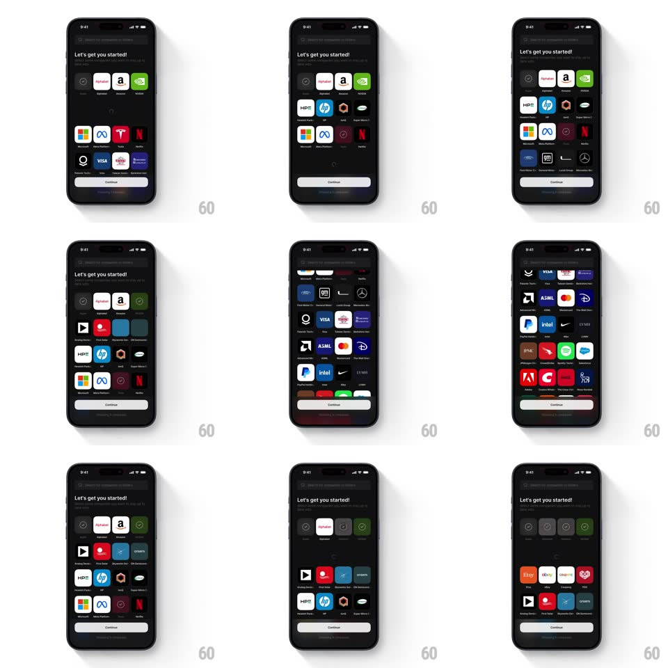

Media
Frame-by-frame

Rebuild this interaction 1:1: Quartr's company-picker onboarding - tap a company card and a row of related suggestions expands inline beneath it, staggering in while the grid reflows around it.

Rebuild this interaction 1:1: Quartr's company-picker onboarding - tap a company card and a row of related suggestions expands inline beneath it, staggering in while the grid reflows around it. ## Integration Integration: stack-agnostic spec - springs given as stiffness/damping, timed motions as duration + curve; map every value to your framework and animation library of choice. ## Scene A dark onboarding screen: "Let's get you started!" with a sub-line about following companies, a grid of company logo cards (Amazon, Meta, Tesla, Netflix, Microsoft, Visa, HP, Intel, Spotify...), and a Continue button pinned at the bottom. Selecting a card inserts a horizontal row of related-company suggestions directly under the tapped card's row. ## Motion spec Pattern: tap-to-expand inline suggestion row with staggered entry and grid reflow. - Tap a card: it marks selected (check/badge swap, scale pulse 1 -> 1.08 -> 1, 180ms) and the suggestion row inserts below its grid row - the rows beneath slide down (300ms, ease-out) to make room as the new row's container expands its height from 0. - The suggestion cards stagger in horizontally (from the left, 20px slide + fade, 70ms apart) inside the expanded row. - Tapping a different card collapses the current suggestion row (height to 0, 250ms) and expands the new one - one open row at a time; tapping the same card again collapses it. - Suggestion cards are tappable too - selecting one marks it with the same pulse and adds it to the followed set without collapsing the row. - Continue stays pinned and updates its enabled state/count as selections change (label crossfade, 150ms). ## Calibration - The expansion is an insert, not a sheet - the grid visibly makes room; nothing overlaps. - The reflow must keep every visible card on screen - cards slide down, never jump. ## Reduced motion Row height animates without stagger (cards fade in together, 200ms). ## Don't miss - Suggestions are contextual to the tapped company - the row header or ordering should make the relation obvious. - The selected state is a badge/check on the logo card - not a border glow; it must read in a dense grid.